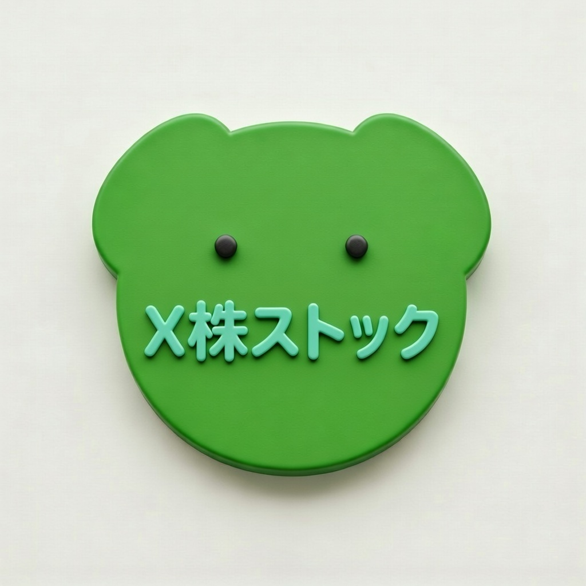

X株ストック (XStock Stocker)
Capture Japanese Stock Ideas from Screenshots in Seconds.
SNSで見かけた気になる銘柄のスクショをそのまま取り込み。
4桁の証券コード・銘柄名を自動抽出して、画像＆メモと一緒にスマート管理。
Automatically extract 4-digit Japanese TSE stock codes and company names from screenshots using on-device OCR, and organize your stock watchlists with zoomable images and notes.
主な特徴・機能 / Key Features
スクショから銘柄コードを自動検出
Auto Stock Code Extraction via OCR
X（旧Twitter）や株情報サイトのスクリーンショットを読み込むだけで、内蔵の東証銘柄マスタと照合し4桁コードと社名を自動リストアップします。
Import screenshots from X or financial sites to automatically match 4-digit stock codes and company names against the built-in TSE master database.
元画像（拡大対応）＆一言メモを保存
Zoomable Screenshots & Quick Notes
「どの投稿・チャートで気になったのか」を忘れないよう、元のスクリーンショット画像（ピンチズーム対応）とメモをセットで記録できます。
Save the original screenshot (with pinch-to-zoom) alongside your personal investment thesis so you never forget why a stock caught your eye.
複数銘柄の一括取り込みにも対応
Batch Multi-Stock Detection
監視銘柄一覧やテーマ株まとめ画像など、1枚の画像に複数の銘柄が含まれている場合でも候補を一括検出し、必要な銘柄を選んで登録できます。
Detects multiple stock codes from a single watchlist or theme-stock screenshot and lets you pick which ones to save.
完全オンデバイス・外部送信ゼロ
100% On-Device Privacy
文字認識（OCR）も保存した銘柄リストもすべてiPhone内で完結。大切な投資メモや画像が外部サーバーに送信されることはありません。
All OCR processing and stock notes stay 100% on your iPhone. No images or investment data are ever uploaded to external servers.